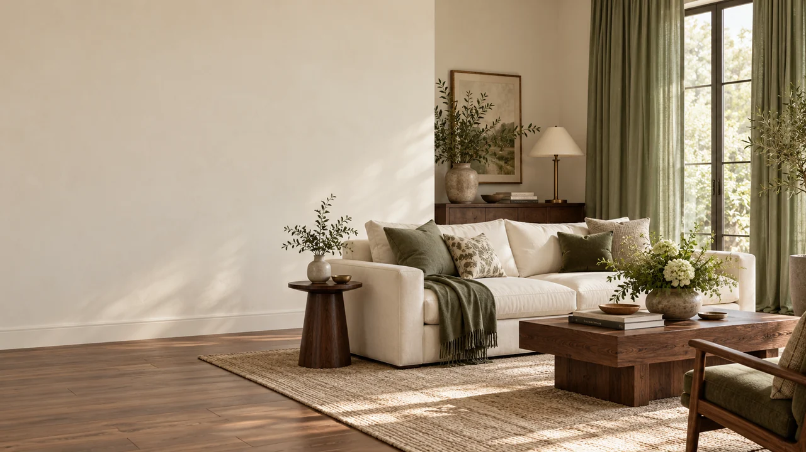
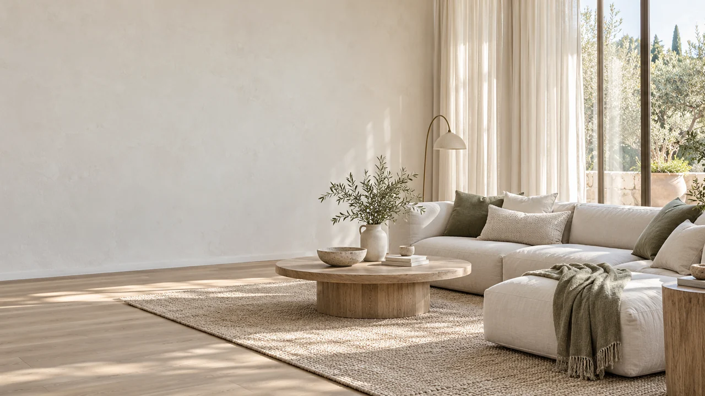

Пять вариантов дизайна
Какое настроение
ближе вашему дому?
Откройте каждый вариант и посмотрите его с телефона. Номера соответствуют фотографиям концептов.
 Смотреть сайт ↗
Смотреть сайт ↗Бордовое ателье
 Смотреть сайт ↗
Смотреть сайт ↗Творческое ателье

Смотреть сайт ↗Шалфей и шоколад
 Смотреть сайт ↗
Смотреть сайт ↗Охра и молоко

Смотреть сайт ↗Молочный и оливковый
Первые экраны — интерьерные иллюстрации. В портфолио — реальные фотографии мастерской.